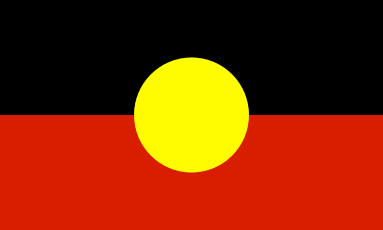
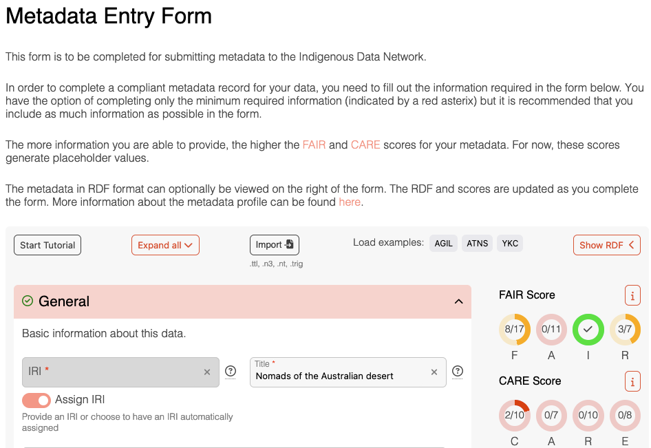
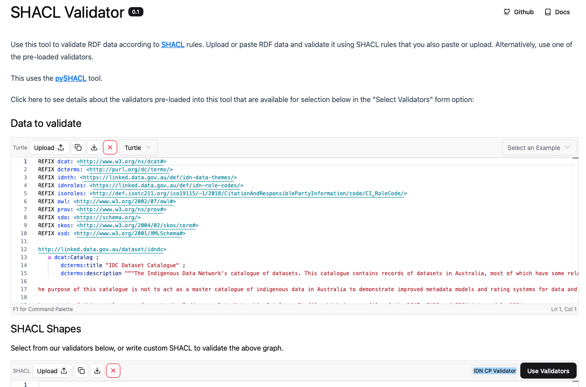
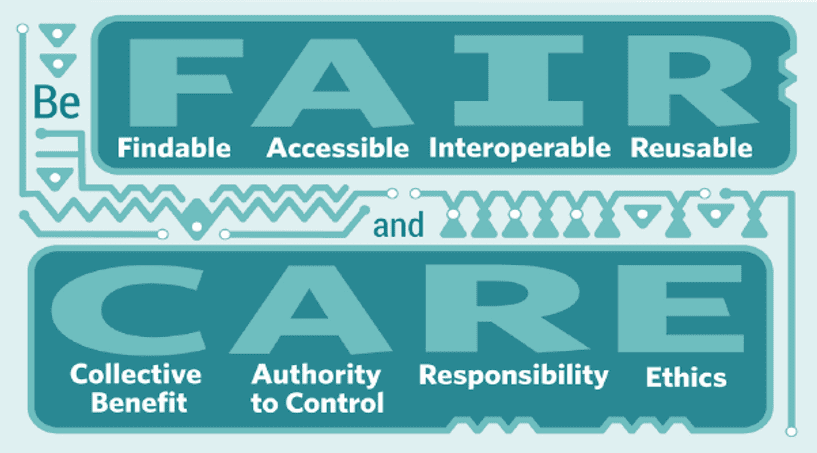

IDN Catalogue Profile - Guidance
This guide helps you use the Indigenous Data Network's Catalogue Profile. Whether you want to describe a few resources, prepare a collection, seek advice about a larger catalogue, or build a catalogue of your own, start with the use case that best matches what you are trying to do.
You can create metadata like the examples on this page using the Metadata Entry Tool, which guides you through the fields and shows the record as you build it.
Use Cases
-
I have a few resources to describe
I want to create metadata for one or a few resources to contribute to the IDN, or try the Metadata Entry Tool to understand what the metadata looks like before I decide what to do next. Start with the metadata creation guidance and examples.
-
I need to prepare a collection or archive
I have a sizeable collection of Indigenous data to contribute. I need to understand the metadata it requires, identify any transformations, and perhaps prepare a batch or ETL process. I may need technical advice from the IDN. See the guidance on metadata formats and mappings and validation. For advice about a particular collection, contact the IDN.
-
I want advice on one or many institutional catalogues
My institution has many collections, and some may include Indigenous data, but we do not yet know where. I want advice on how to discover and review potential Indigenous data in our catalogues. We can explore contributing resources or a closer collaboration later. We can start with a conversation and decide what makes sense as we learn more. Contact the IDN to discuss options.
-
I want to build a catalogue or data commons for my domain
I am developing a catalogue or data commons for my own domain. I want to use the IDN Catalogue Profile and shared standards, and perhaps compatible tools or technologies, while understanding where I may need to adapt them for my context. Contact the IDN to discuss using the Profile.
Guidance by task
The topics below are shared reference guidance, rather than separate workflows for each use case. Use the sections that fit your work. For example, guidance on how data relates to Indigenous peoples is relevant whenever you are describing resources or reviewing a collection.
- Understand the Catalogue Profile, at a high level?
- Indicate something in a catalogue is Indigenous?
- See some examples?
- Create metadata according to the profile?
- Validate my metadata?
- Calculate and improve FAIR and CARE scores?
- Express my catalogue's metadata according to the profile but in other formats?
Understand the Catalogue Profile, at a high level
Metadata is used to describe things in catalogues, so they can be discovered, understood and used.
The IDN Catalogue Profile is formally declared as a profile of DCAT, SKOS and PROV-O. Its current metadata model primarily uses schema.org classes and properties, together with PROV-O and SKOS terms, and provides mappings to DCAT and other catalogue models.
This combination is tuned to support:
- indicating the Indigenousness, or otherwise, of data
- describing governance arrangement for data
No amount of metadata can substitute for actual governance arrangements, so use of this Catalogue Profile is limited to the representation of such arrangements only.
Use of metadata according to this Profile should allow users to tell how catalogued resources relate to Indigenous people and what arrangements are in place for sensitive governance of them.
How?
The Profile reuses terms from established vocabularies rather than creating a completely new metadata language. It specifies how those terms should be combined and supplies reference data for describing Indigenous data and its governance consistently.
This Profile suggests three main things you can do to address the dot points above for a resource:
- Record basic, standardised, metadata for it
- Represent, in detail, relations people and organisations have to it
- Indicate any policies that you have that affect it
These three approaches are detailed as "patterns" in the Specification Document's Patterns Section.
Indicate how data relates to Indigenous peoples
Sometimes a cataloguer can confidently state how data relates to Indigenous peoples. At other times, the relationship is apparent but cannot responsibly be reduced to a single statement. The IDN Catalogue Profile supports both situations: you can describe available evidence, make a direct classification, or do both.
These approaches are complementary. A classification is a clear assertion; links to people, organisations, policies, themes (keywords), languages and places preserve the context behind it. Do not infer the Indigenous status of a person or organisation from a name, subject or association. Record identity information only when it is supported by an appropriate source and is suitable to publish.

This data may be Indigenous
“This data may be Indigenous, but I am not sure. The author is not Indigenous, but the resource includes an Indigenous language and the translator is Indigenous. The publisher is an Indigenous organisation within a larger non-Indigenous organisation. Some, but not all, of the themes are Indigenous. The data is governed under an Indigenous data governance policy, and its custodian is Indigenous. I can verify most or all of these details, so I will record them. The resulting metadata will help people understand the resource without forcing me to make an unsupported yes-or-no claim.”
Record each supportable fact: people and organisations and their roles; relevant governance policies; keywords; languages; places; and a clear description of the resource. Together, these statements form an evidence graph that preserves nuance and makes the basis for later decisions inspectable.
Supplying this detail should progressively increase the resource's Indigenous characterisation. In this situation, you do not have to force the evidence into an unsupported “it is” or “it is not” conclusion: the Profile helps you work through and communicate what is known.
I know this data is Indigenous
“I know this data is Indigenous and have no reason to doubt it. I cannot verify all of its provenance and attributions in a structured way, and I do not have exact details of every agent or governance arrangement. I will use the Data Indigeneity vocabulary to record the relationship I can confidently assert.”
Use the Data Indigeneity vocabulary when you are confident that the classification is accurate. Choose the specific applicable concepts—By Indigenous People, About Indigenous People and/or About Indigenous Things—rather than applying an ambiguous “Indigenous” label:
:resource-x schema:keywords <https://data.idnau.org/pid/vocab/indigeneity/about-indigenous-people> .
Applying a Data Indigeneity term should significantly increase the resource's CARE score (see Calculating Scores), even when fuller provenance, attribution or governance metadata is unavailable. Some specific terms, particularly By Indigenous People, may satisfy more than one scoring indicator. Use this vocabulary when you are confident of the applicable relationship; the direct classification does not replace supporting detail when that detail can be supplied.
What evidence should I record?
Supply as much relevant, verifiable detail as is available and appropriate to publish. Prefer persistent HTTP identifiers for people, organisations, concepts and places so that the relationships can be followed as a graph. The IDN reference data catalogue and IDN Agents Database can help you find suitable identifiers.
- Description: explain the resource's content, context and any uncertainty in plain language.
- Themes: use
schema:keywordswith concepts from vocabularies such as IDN Themes or the ANZSRC Fields of Research. - Languages: distinguish data about a language (
schema:keywords) from content in a language. Useschema:inLanguagewith a concept from AustLang for either. - Places: use
schema:spatialCoverageto link to an Indigenous Location, Native Title determination or other relevant place. - People and organisations: link each agent to the resource and state its role using the
Profile's
prov:qualifiedAttributionpattern and the Data Roles vocabulary. See the Agents section of the Specification. - Agent indigeneity: where the information is supported and appropriate to publish, describe an organisation with the Organisations Indigeneity vocabulary or a person with the Indigenous Status of Persons vocabulary. These vocabularies classify agents, not the data itself.
- Governance: link the resource to relevant policies or governance frameworks with the
odrl:hasPolicyproperty from the Open Data Rights Language (ODRL) vocabulary.
Examples
These three stages show how a record for Law: The Way of the Ancestors can be progressively enriched. It is a book described as a schema:CreativeWork in the Indigenous Data Network catalogue. The details below are drawn from the published profile examples; check the current catalogue record before reusing or extending them.
Only add information that you can support with a source. Where dates, roles or governance arrangements are not known, leave them out until they can be verified.
Minimal Metadata Record
| Property | Value |
|---|---|
| Identifier | https://data.idnau.org/pid/762463a4-f8b1-4eec-a335-3689c8d86e9e |
| Title | Law: The Way of the Ancestors |
| Description | The authors show how Indigenous law has enabled people to survive and thrive in Australia for more than 2000 generations. Nurturing people and places, law is the foundation of all Indigenous societies in Australia, giving them the tools to respond and adapt to major environmental and social changes. |
This establishes what the resource is and gives it a persistent identifier. It does not yet show the relationships and governance context that can make the record more informative.
Improved Metadata Record
This version adds a book type, ISBN, authors linked to agent identifiers, and terms from the Data Indigeneity vocabulary. The vocabulary terms describe the resource's relationship to Indigenous peoples; they do not replace the descriptive metadata.
| Property | Value |
|---|---|
| Type | Book |
| ISBN | 9781760762827 |
| Creators | Marcia Langton; Aaron Corn |
| Keywords | About Indigenous people; by Indigenous people |
Comprehensive Metadata Record
This version adds a creation date, governance context and two further themes from the IDN Themes vocabulary, matching the live catalogue record.
| Property | Value |
|---|---|
| Date created | 2023 |
| Governance policy | University of Melbourne Collections Policy, which the profile identifies as applying to resources in the Indigenous Studies Unit catalogue |
| IDN Themes | Law; Aboriginal history |
The following Turtle record brings together the details from all three stages. More detailed dates, agents and governance information can be added when verified for the record.
PREFIX id: <http://id.loc.gov/vocabulary/identifiers/>
PREFIX ind: <https://data.idnau.org/pid/vocab/indigeneity/>
PREFIX odrl: <http://www.w3.org/ns/odrl/2/>
PREFIX schema: <https://schema.org/>
PREFIX xsd: <http://www.w3.org/2001/XMLSchema#>
<https://data.idnau.org/pid/762463a4-f8b1-4eec-a335-3689c8d86e9e>
a schema:CreativeWork ;
schema:name "Law: The Way of the Ancestors" ;
schema:description "The authors show how Indigenous law has enabled people to survive and thrive in Australia for more than 2000 generations. Nurturing people and places, law is the foundation of all Indigenous societies in Australia, giving them the tools to respond and adapt to major environmental and social changes." ;
schema:additionalType <http://id.loc.gov/vocabulary/marcgt/boo> ;
schema:dateCreated "2023"^^xsd:gYear ;
schema:creator
<https://orcid.org/0000-0002-1398-7524> ,
<https://orcid.org/0000-0002-4797-9776> ;
schema:identifier "9781760762827"^^id:isbn ;
schema:keywords
ind:about-indigenous-people ,
ind:by-indigenous-people ,
<https://vocabularyserver.com/apais/xml.php?skosTema=1251> ,
<https://vocabularyserver.com/apais/xml.php?skosTema=13> ;
odrl:hasPolicy <https://data.idnau.org/pid/MPF1309> .
Create metadata according to the profile
The best way to create metadata in a format required by this Profile depends on the thing you are describing and the kind of work you need to do.
What kind of thing are you describing?
Before choosing how to create its metadata, be clear about the thing the catalogue entry is about. A book, article, photograph or cultural artefact is a creative work. A dataset is a collection of data—such as observations, measurements, records or files—published or curated as a unit. A book about a dataset is still a creative work; the dataset it discusses is a different resource.
The IDN Catalogue Profile uses schema:CreativeWork as the generic type for catalogued resources,
equivalent here to dcat:Resource. When the resource is a dataset, its more specific type is
indicated with schema:additionalType. The resource (the book or dataset) and the catalogue entry
describing it are related but distinct things; DCAT can also describe the entry itself with a
dcat:CatalogRecord when that distinction matters.
Vocabularies, data models, ontologies and validators are also resources, but they serve a different purpose from the content or dataset being described. They may need specialised metadata, identifiers or relationships, so don't assume the ordinary resource-type choices or entry workflow are suitable for them. If you're unsure, ask the IDN for advice before creating records in bulk or building a pipeline.
Ways to create metadata include:
- Use the Metadata Entry Tool
- Use Software
Use the Metadata Entry Tool
This is our recommended starting point
The Indigenous Data Network maintains an online, interactive, tool that you can use to create metadata according to the IDN Catalogue Profile.
The tool contains examples you can load, video tutorials and displays the metadata it creates as you fill in form fields.
It auto-calculates CARE and FAIR scores as you go too.

Use Software
Lots of catalogue tools are able to export metadata in formats that are compatible with this profile. For example, the open source CKAN tool can implement its own profiles of DCAT which are compatible with this profile! Another example: the EMu collections management software can export Dublin Core metadata in an XML format that is also interpretable as RDF.
Validate my metadata
Whatever method you use to create your metadata, you can validate it against this profile.
The Metadata Entry Tool checks your metadata as you create it. If you prepare or edit RDF yourself, you can use the standalone validation tool below to check it against the profile. The Specification Document also provides complete RDF examples to work from.
Validation tool
Use the Validation tool to check your metadata against the profile. Select the "IDN CP Validator" option from the Use Validators selector.

The validator checks structure and values—for example, whether the metadata is correctly formatted and machine-readable. It cannot assess the appropriateness or quality of the metadata. For that, compare FAIR or CARE scores with your own expectations for the record.
For batch validation across a collection or catalogue, the IDN Catalogue Profile SHACL validator file can be integrated into a pipeline or used with another SHACL-compatible validation tool. See the Validation Section of the Specification Document for technical details.
CARE and FAIR scores
The Metadata Entry Tool calculates FAIR and CARE scores for resources described by metadata. The scoring definitions can also be used to calculate scores automatically for large numbers of items.
The score supports that judgement by assessing the metadata against defined indicators; it does not itself prove that the data is Indigenous, decide whether it belongs in a particular catalogue, or establish that its governance is adequate. The CARE scoring definition specifies how the evidence should affect the score.

View and report scores
The Metadata Entry Tool automatically calculates these scores as you use it, and it details how scores are created too.
The IDN also provides the underlying software to calculate scores from IDN Catalogue Profile metadata: Scores Calculator. If you're technical, you can dive into the weeds of score creation - and please let us know what you think about the methods we have implemented!
The FAIR and CARE principles are widely known and many other tools exist for at least FAIR self-assessment, such as the ARDC's FAIR Data Self Assessment Tool, so you can use these tools alongside the IDN's to cross-check.
Improve FAIR or CARE scores
Since the Metadata Entry Tool details how its scores are created, you should be able to see what to do to improve your scores. For example, for the A1 part of the Accessibility score of FAIR, if you indicate access using standard terminology such as "Access to metadata", or "Conditional access", you will get some score. If you indicate the most accessible form, "Open access", you will get the best A1 score.
If you want to improve scores en masse, perhaps across a whole catalogue, review the scoring definitions used by the IDN's Scores Calculator software. For example, the FAIR scoring definition describes how metadata elements contribute to the various FAIR assessment components and can help identify catalogue-wide metadata improvements with the greatest impact on scores. If you want to increase score en masse, perhaps across a whole catalogue, have a look at the calculation functions in the IDN's Scores Calculator software. The function used for the A1 part of the Assessment FAIR score is calculate_a().
Use the Profile with another metadata model or format
Another system may use a different RDF format or a different metadata model. Changing format—for example, from Turtle to JSON-LD—changes how the same metadata is written. Mapping between models—for example, from another catalogue schema to the IDN Catalogue Profile—requires decisions about what the fields and values mean, and may not be a one-to-one conversion.
Start by checking the mappings in the Specification Document. If your source system or model is not covered, document how its fields and values correspond to the Profile. Don’t assume that fields with similar names mean the same thing, or force information into a Profile field when there is no good match.
For a small trial, a written mapping and a few representative records may be enough to clarify what is involved. For a batch conversion or pipeline, make the mapping repeatable and validate the resulting metadata. Contact the IDN if you need advice on a larger conversion.
Document Info
Information (metadata) about this document:
- URI
https://data.idnau.org/pid/cp/guide↗- Is Part Of
- IDN Catalogue Profile
- Publisher(s)
- Indigenous Data Network
- Creator(s)
- Nicholas J. Car
- Dates
-
Created 2022-03-18 Issued 2024-03-15 Modified 2026-10-21 - Version
- 0.1.0
- History note
- 2026-10: restructured guidance and updated advice on metadata creation, validation and mappings
2026-08: rewrote the guidance for describing data indigeneity as two evidence-based scenarios
2026-05: changed examples from DCAT + DCTERMS to schema.org - License
- Attribution 4.0 International (CC BY 4.0)
- Copyright
- Indigenous Data Network, 2022 - 2026